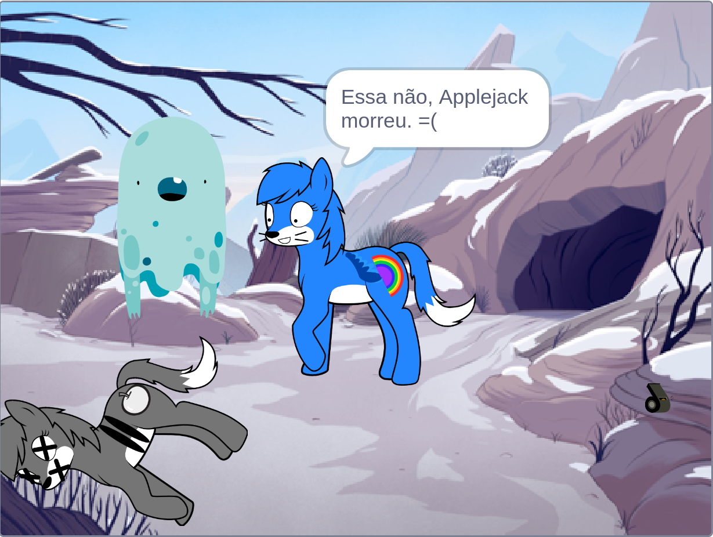
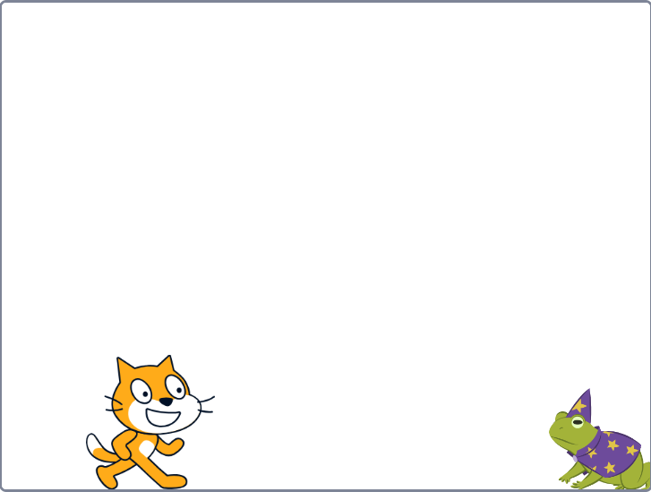
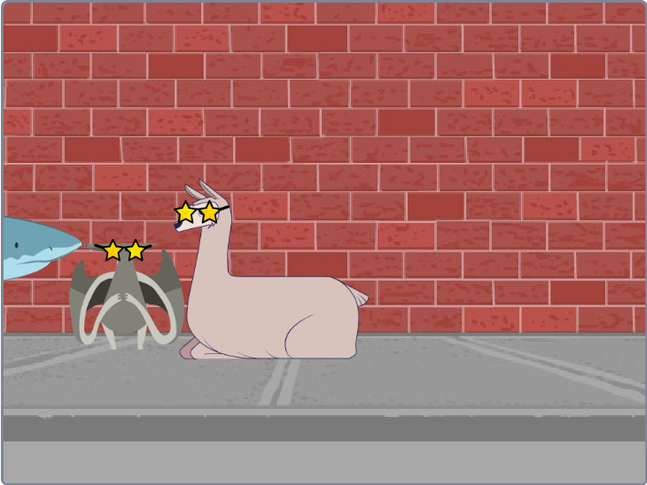

Projetos

My Little Pony
Uma animação baseada no desenho My Little Pony, disponível no Scratch.

Salve o gato
Um jogo onde o usuário salva o gato de uma maldição, clicando nele.

lhama revolts
Uma animação em loop desenvolvida no Scratch.